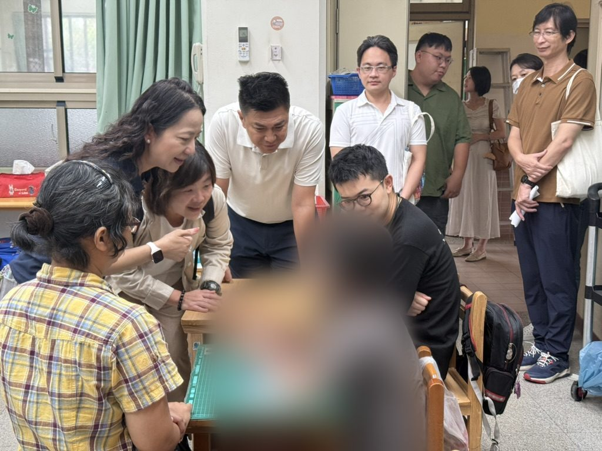

高雄市議員陳慧文今（15）日於市議會教育部門業務質詢中指出，特教學校專案護理師的調薪案延宕近十個月，市長先前裁示「薪資一定要高於業界平均」，至今仍未見正式核定數字。如今好不容易爭取到的成功特殊教育學校專案護理師已提出辭呈，預定9月30日離職，中、重度身心障礙學生的在校醫療照護面臨人力空窗風險。

從「全校只有一位校護」到增置專案護理師
陳慧文回顧，特教學校學生多有複雜醫療照護需求，過去卻只有一位校護要照顧全校，老師有愛心但並非專業醫護。她自2025年（民國114年）起持續推動：10月8日與邱俊憲、湯詠瑜議員共同主持「高雄市重症失能學童就學困境」公聽會，要求教育局盤點重症學生醫療照護需求、增置專案護理師；11月6日教育部門質詢直指專案護理師薪資缺乏競爭力；11月25日市政總質詢中，陳其邁市長當場裁示護理師薪資應具市場競爭力、要高於業界平均，並表示「經費不是問題」。
市府於2025年10月15日核定增置2名約聘專案護理師，優先配置於成功特殊教育學校與高雄特殊教育學校，成功特教其後完成甄選、人力到位。陳慧文表示：「員額這一段，本席是肯定的。」但問題出在後面，薪資的正式數字始終沒有出來。
近十個月過去 38,948元原地踏步，實領34,918元
陳慧文指出，當初核定的月薪區間為38,948元至41,173元，2026年1月教育局書面回覆仍是同一區間；8月14日她到成功特教訪校取得的薪資資料顯示，115年8月月支38,948元，扣除勞保、健保與自提勞退共4,030元後，實發34,918元。
陳慧文並以先前公聽會與其他城市待遇作比較。她指出，衛生局主秘曾於公聽會說明，具兩年以上經驗的居家護理、長照機構護理人力，合理待遇約在4萬7千至4萬8千元；臺北市專案護理師待遇則為5萬元起跳。她質疑：「市長講的是『高於業界平均』，但現在的月支，連業界常見起薪都還沒追上。」
陳慧文強調，照顧中重症學童的負荷遠高於一般照護現場，「你要用勤勞的、要人家做功德、做愛心，是不可能的。」她認為，這樣的薪資結構留不住人，而高流動率對需要穩定照護的孩子就是風險。
教育局：擬調至4萬5千至4萬7千元，盼兩個月內完成
陳慧文當場要求教育局說明三件事：薪資何時核定、核定數字多少、是否確實高於業界平均。她並追問成功特教與高雄特教兩校專案護理師的薪資結構是否一致，以及在正式核定前能否先建立補助機制，讓學校招募時就能開出合理待遇，而非仍以3萬8千元對外徵才，「這真的招不到人。」
教育局長吳立森答詢表示，成功特教專案護理師確定於9月30日異動離職，教育局正積極處理臨時護理人力；薪資部分目前正在簽核，擬將標準表七職等月薪調整至薪點328至344、約4萬5千元至4萬7千元區間，希望兩個月內完成。
空窗期不能丟給學校自己想辦法
對於「兩個月」，陳慧文追問：「他9月30號就離職了，這當中的空窗期怎麼辦？要讓學校自己去想辦法嗎？」吳立森回應，教育局會在交接期間協助學校媒合人力，薪資俸點仍有行政程序需處理，正積極辦理中。
目前狀態：教育局所述4萬5千至4萬7千元為簽核中的擬議區間，尚非正式核定結果；最終薪資標準仍以市府正式核定內容為準。
本文依陳慧文服務處2026年9月15日教育部門業務質詢新聞稿、質詢紀錄與2026年8月14日成功特殊教育學校考察紀錄整理。延伸閱讀：2025年11月25日特教生交通與護理師薪資質詢、特教學生交通與校園照護支持。